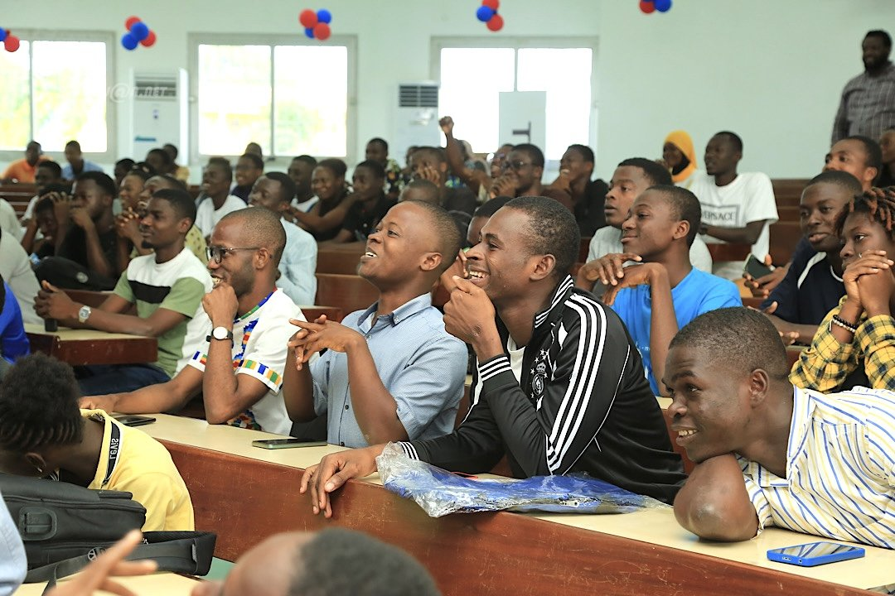

Chers Zulu, La filière Maths-Info peut sembler exigeante, mais chaque défi représente une chance de progresser. Ne voyez pas les obstacles comme des freins, mais comme des tremplins pour apprendre et grandir.
Bienvenue En Math-Info
Votre bibliothèque numérique de ressources universitaires
Zulu
Bienvenue à la FAC : P'tit Conseils pour les nouveaux étudiants
- À votre arrivée à l'UFR
Si vous connaissez un ami inscrit à l'UFR avant votre arrivée, n’hésitez pas à le contacter. Il pourra vous guider, vous donner des conseils précieux et vous aider à repérer votre département. Par ailleurs, renseignez-vous sur la date de la rentrée académique. Vous pouvez aussi discuter avec plusieurs étudiants déjà présents sur le campus pour recueillir des informations. Enfin, dirigez-vous au bureau M de l'UFR où des conseillers sont disponibles pour fournir des renseignements fiables et utiles.
- Pendant les cours magistraux (CM)
Lors d’un cours magistral, il est crucial d’être concentré. La moindre distraction peut nuire à votre compréhension des polycopiés fournis par le professeur. Sachez que certains enseignants mettent un accent particulier sur des points du cours qui ont une forte probabilité (99 %) d’être abordés à l’examen. Cependant, ne négligez jamais les 1 % restants ! Même si votre présence en CM n’est pas obligatoire, considérez-la comme essentielle. C'est dans ces moments que vous pourrez saisir les démonstrations et approfondir votre compréhension du contenu.
 - Pendant les travaux dirigés (TD)
Les TD ressemblent davantage à des classes comme au lycée. L’appel y est souvent effectué, et les absences sont enregistrées. Cela peut impacter votre note de contrôle continu, qui compte pour un tiers de la validation de l’UE. En participant activement aux corrections des exercices des fiches de TD, vous renforcerez votre compréhension et serez mieux préparé.
- Préparer un examen
Un examen, contrairement aux épreuves du lycée, ne se prépare pas à la dernière minute. Il est important de considérer chaque CM et TD comme des opportunités d’assimiler le cours en vue de l’examen. Préparez-vous progressivement pour maximiser vos chances de réussite.
- Les conséquences de la tricherie
La tricherie est une atteinte à votre dignité. Supprimez cette idée de votre esprit. Tenter de tricher entraîne souvent de la confusion et érode la confiance que vous avez dans vos propres acquis. Comme le disait un professeur : « Restez dignes dans la douleur. » Apprenez à affronter vos défis avec honnêteté.
Parcours
Le parcours de formation en Mathématiques et Informatique est conçu pour offrir une base solide dans les deux disciplines. Les étudiants suivent des cours théoriques et pratiques, participent à des projets de groupe et effectuent des stages en entreprise.
Structure Générale des Parcours
Licence 1 (L1) : Tronc Commun Mathématiques-Informatique
Tous les étudiants débutent par un tronc commun, acquérant une base solide en mathématiques et en informatique.
Licence 2 (L2) : Spécialisation Initiale
Options : Informatique ou continuation en tronc commun mathématiques.
Licence 3 (L3) : Diversification
Spécialisations : Informatique, Mathématiques pures, ou Mécanique.
Masters : Spécialisations Approfondies
Mathématiques, Informatique, Mécanique.
Filières Professionnelles
MIAGE : Informatique appliquée à la gestion des entreprises.
Débouchés : Analyste-programmeur, technicien réseaux.
Actuariat : Mathématiques, finance, gestion des risques.
Débouchés : Analyste financier, actuaire.
Data Science : Analyse de données, IA (Master).
Débouchés : Data scientist.
Mécanique et Énergétique : Ingénierie mécanique.
Débouchés : Ingénieur mécanicien.
Archive
Le programme d'archivage de l'UFR Mathématique et Informatique vise à préserver et à organiser les documents académiques, les projets de recherche et les ressources pédagogiques. Cela inclut la numérisation des documents, la création de bases de données et la mise en place de systèmes de gestion documentaire.
Les étudiants sont encouragés à participer à ce programme en contribuant à l'archivage de leurs travaux et en apprenant les meilleures pratiques en matière de gestion de l'information.
Ce programme est un excellent moyen de préserver l’héritage académique de l’UFR. Les ressources archivées sont accessibles aux futures générations d’étudiants.
Contactez le bureau des affaires étudiantes pour participer.
- Cours magistraux
- Documents (TD, anciens sujets, annales, valideur)
- Sites à connaître
Opportunité
Les étudiants de l'UFR Mathématiques et Informatique bénéficient de nombreuses opportunités académiques et professionnelles, notamment des bourses d'études, des concours accessibles et diverses possibilités de formation.
Que Disent Nos Aînés
Note de motivation et encouragement aux étudiants de la filière Maths-Info
À ceux qui ont échoué, n’oubliez pas que l’échec est une étape, non une finalité. Ce qui compte, c’est de tirer des enseignements, de se relever avec force.
Aîné Achille (Licence 3 Info)
À ceux qui avancent, félicitations pour vos réussites. Continuez à travailler avec ardeur et inspirez ceux qui suivent votre parcours.
Aînée Aby (Master 2 Maths)
À ceux qui trouvent la filière difficile, vous n’êtes pas seuls. Persévérez, restez curieux, et cherchez du soutien.